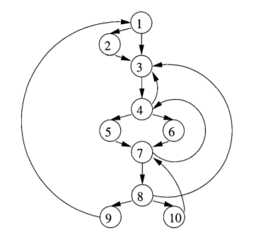
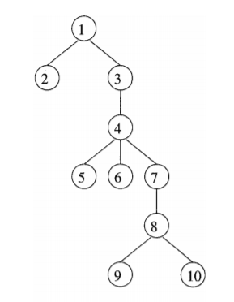

4. machine-independent
optimizations (3)
7. 流图中的循环
(1). 支配结点
- 支配结点: 若从流图的入口到结点 $n$ 的每条路径都经过结点 $d$，则称 $d$ 支配 $n$，记为 $d\ \mathrm{dom}\ n$
- 每个结点都支配其自身
- 直接支配结点: 在所有路径上，最后一个的支配结点
- 回边: 满足 $d\ \mathrm{dom}\ n$ 的有向边 $n\rightarrow d$
- 数据流方程
- $\small\mathrm{OUT}[B]$: 支配 $\small B$ 的出口处的结点集合
- $\small\mathrm{OUT[ENTRY]=\lbrace ENTRY\rbrace}$
- $\small\mathrm{IN}[B]$: 支配 $\small B$ 的入口处的结点集合
- $\small\mathrm{OUT}[B]=\mathrm{IN}[B]\cup B,\quad \mathrm{IN}[B]=\bigcap_{\mathit{pred\ of\ B}}\mathrm{OUT}[P]$ $\small (B\ne \mathrm{ENTRY})$
- 支配结点计算
Input: 流图 G=(N, E),
Output: 给出集合 N 中各结点 n 的支配结点集合 D(n)
OUT[ENTRY] = { ENTRY }
for (除了 ENTRY 的每个基本块 B)
OUT[B] = N
while (某个基本块的 OUT 值发生改变) {
for (除了 ENTRY 的每个基本块 B) {
IN[B] = ⋂pred of B OUT[P]
OUT[B] = IN[B] ⋃ B
}
}
e.g.7-1 计算支配结点集合


| $\mathsf{Vertex}$ | $\mathrm{OUT}[B]^0$ |
$\mathrm{IN}[B]^1$ | $\mathrm{OUT}[B]^1$ |
| $E$ | $\{E\}$ | | |
| $①$ | $N$ | $\{E\}$ | $\{E\ ①\}$ |
| $②$ | $N$ | $\{E\ ①\}$ | $\{E\ ①\ ②\}$ |
| $③$ | $N$ | $\{E\ ①\}$ | $\{E\ ①\ ③\}$ |
| $④$ | $N$ | $\{E\ ①\ ③\}$ | $\{E\ ①\ ③\ ④\}$ |
| $⑤$ | $N$ | $\{E\ ①\ ③\ ④\}$ | $\{E\ ①\ ③\ ④\ ⑤\}$ |
| $⑥$ | $N$ | $\{E\ ①\ ③\ ④\}$ | $\{E\ ①\ ③\ ④\ ⑥\}$ |
| $⑦$ | $N$ | $\{E\ ①\ ③\ ④\}$ | $\{E\ ①\ ③\ ④\ ⑦\}$ |
| $⑧$ | $N$ | $\{E\ ①\ ③\ ④\ ⑦\}$ | $\{E\ ①\ ③\ ④\ ⑦\ ⑧\}$ |
| $⑨$ | $N$ | $\{E\ ①\ ③\ ④\ ⑦\ ⑧\}$ | $\{E\ ①\ ③\ ④\ ⑦\ ⑧\ ⑨\}$ |
| $⑩$ | $N$ | $\{E\ ①\ ③\ ④\ ⑦\ ⑧\}$ | $\{E\ ①\ ③\ ④\ ⑦\ ⑧\ ⑩\}$ |
回边: $\small④\to ③,\quad ⑦\to ④,\quad ⑧ \to ③,\quad ⑨\to①,\quad ⑩\to ⑦$
(2). 自然循环
- 自然循环是一种易于优化的循环，满足如下性质:
- 有唯一的入口结点，称为首结点，它支配循环中所有结点
- 循环中至少有一条返回首结点的路径
- 如果两个自然循环的首结点不相同，那么它们要么互不相交，要么一个内嵌于另一个
- 最内循环: 不包含其他循环的循环
- 若两个循环首结点相同，则合并
- 自然循环的识别: 给定回边 $n\to d$，它对应自然循环为 $\lbrace d\rbrace \cup \lbrace$
所有可以不经 $d$ 到达 $n$ 的结点 $\rbrace$
Input: 流图 G，回边 n → d
Output: n → d 对应的自然循环点集
stack = ∅, loop = {n, d}
push(stack, n)
while (stack is not empty) {
m = top(stack), pop(stack)
for each pred of m {
if (pred is not in loop) {
loop = loop ⋃ {p}
push(stack, p)
}
}
}
e.g.7-2 (续 7-1) 计算自然循环
| 回边 | 自然循环 |
| $④\to③$ | $③④⑤⑥⑦⑧⑩$ |
| $⑦\to④$ | $④⑤⑥⑦⑧⑩$ |
| $⑧\to③$ | $③④⑤⑥⑦⑧⑩$ |
| $⑨\to①$ | $① \sim ⑩$ |
| $⑩\to⑦$ | $⑦⑧⑩$ |